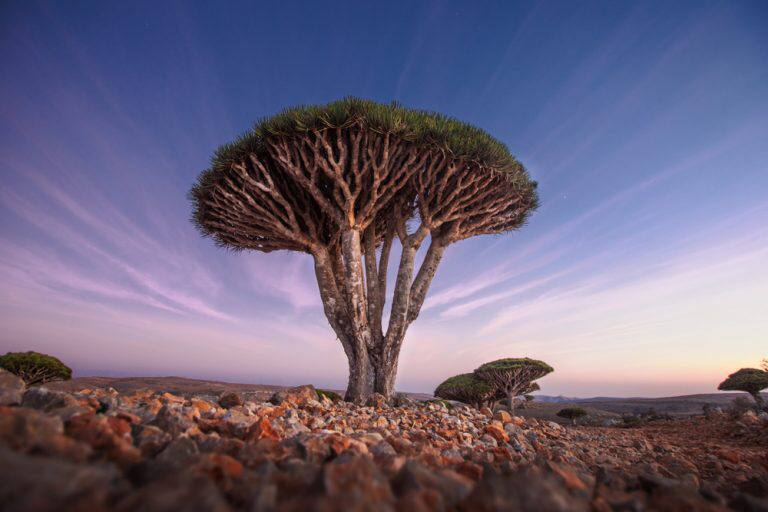

أرخبيل سقطرى- اليمن

يتكون أرخبيل سقطري من ست جزر تقع شمال غرب
المحيط الهندي. يضم هذا الموقع الخلاب مجموعة من
الكائنات الحية التي لا توجد في اي مكان اخر في العالم . تتنوع
الكائنات التي تقطن الجزر بين نباتات وزواحف وعصافير
وأسماك وغيرها من كائنات بعضها مهددة بالانقراض .
اتخذت الجزر موقعها علي قائمة التراث العالمي لليونسكو
منذ عام 2008.